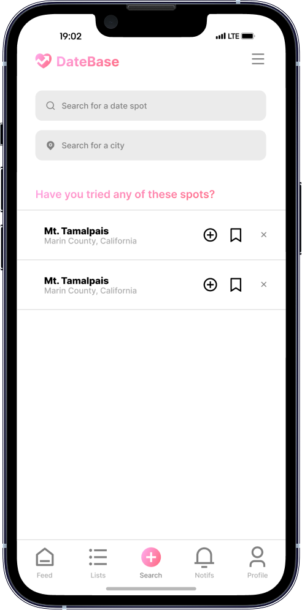
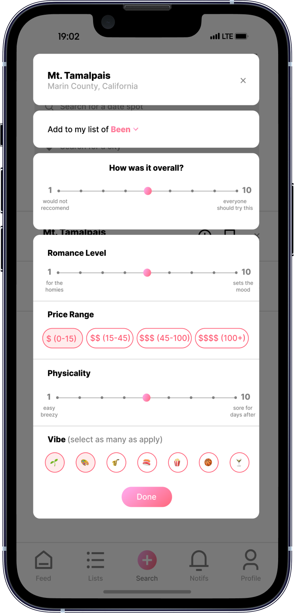
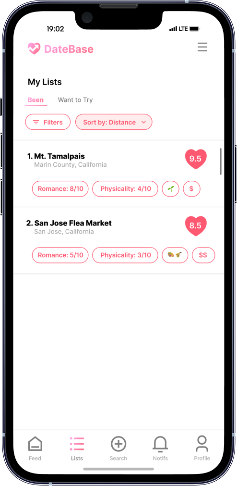
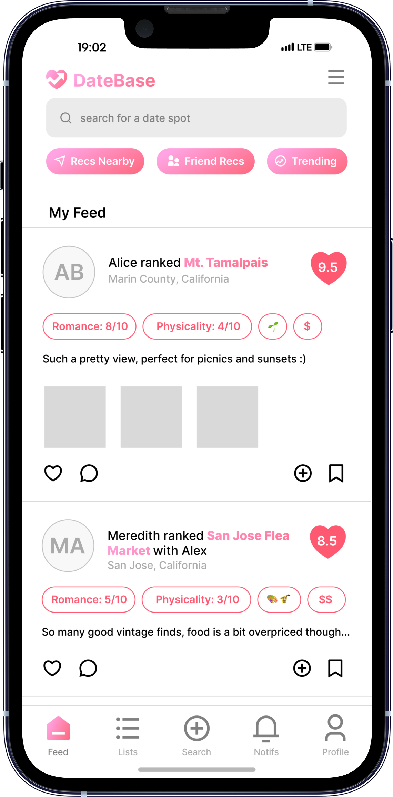

Social media app where users can discover, rank, and share date spots in real time through a personalized friends feed and a global trending feed

Discover & Search
01 Google Maps SDK
Extract nearby date spots in real time like cafes, parks, galleries, and more. Users can search by name and city, ensuring they always find the perfect nearby location.
02 Advanced User Search
Find other users by their unique username to view profiles, check favorite date spots, and connect or follow them within the app.

Rank, Review & Rate Experiences
01 Advanced Filters & Categories
Narrow results by activity vibe (e.g., nature, sports, music, drinks), price range, romance levels, and physicality.
02 Comment and Likes
Engage with the community by leaving comments on date spots and user posts. Share your experience, ask questions, or give tips! You can also heart reviews, helping highlight the best recommendations.
03 Date Scores
Each date spot receives a user-assigned score on a 1 to 10 on a date-worthiness scale. The app then sorts venues from highest to lowest overall score. This way, locations deemed most date-worthy consistently appear at the top of a user's Been list.


Save, Share & Plan
01 Been and Want to Try Lists
The Been list lets users keep track of date spots they have already visited with an optional short note or rating after each visit. The Want to Try list tracks date spots that users bookmark as goals for future outings.
02 Friends Feed vs Global Feed
The Friends Feed is a personalized stream showing only the activity, reviews, photos of people in your network. The Global Feed is the publicly visible stream of all community activity.